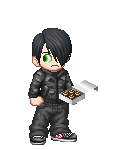
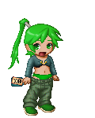

Saving the continuum, one badfic at a time.
Agent Carmen Cream
Redheaded and eccentric, Carmen worked in the Department of Implausible Crossovers, though she still carried more weapons than some Assassins. She absolutely refused to wear her uniform, much to the despair of her superiors, who were quite glad when she retired. Carmen would like to know how you found her, if you would like some tea, and when you are leaving again.
Agent Daphne Flamewrite
Unwilling to tell anyone whether or not her hair was naturally that color, Daphne is kindly described as promiscuous and unkindly as a slut second only to Luxury. She worked in the Department of Bad Slash, partnering with Elaina Thyme until running off during one particularly memorable fic to be Lucius Malfoy's sex slave. Elaina was traumatized by the experience and Daphne was later recovered and is currently under sedation in FicPsych.
Intern Frances grant

Frances was interned at HQ because his parents didn't know what to do with him. He has no ambition to do anything, but will probably end up as a full-fledged Agent eventually. He has an addiction to Chai tea, which is a problem as it's not available in HQ, and currently works for Martin Carlini, in the Department of Floaters. He hasn't been on any missions, but has expressed an interest in disentanglement.
Agent Martin Carlini
Recruited from a Twilight badfic, Martin is a Twilightverse vampire and Gods only know how much resents that fact. As he is currently partner-less, he officially works for the Department of Floaters but tends to be lent out to agents who are, for one reason or another, currently lacking a partner. Most recently, he spent time in FicPsych aiding in the treatment and rehabilitation of Elaina Thyme following the defection of her former partner Daphne Flamewrite.
Lyra

Perky and green-haired, Lyra is a student at GFU. She is a rabid slash fangirl, hence her position at the OFU, and thus far even the torture of the minis has not changed her mind. She makes friends easily, is fond of alcoholic drinks despite being not of age at all, and keeps trying to think of ways to shove Jack and the Tenth Doctor into a closet together. A peek into the future has revealed that Lyra will go on to become a PPC agent.
Permission granted 4th February, 2010. Thank you! All images created by TekTek Dream Avatar.